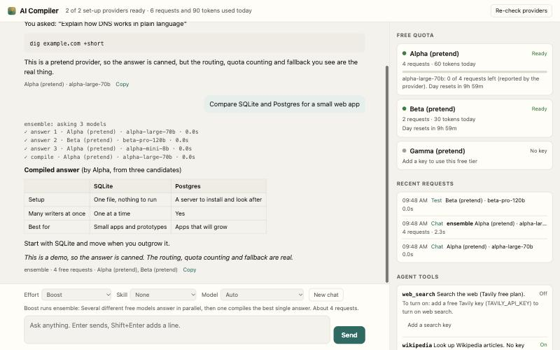

Every free AI tier you have, behind one endpoint.
Add your free API keys for Gemini, Groq, OpenRouter, Mistral, GitHub Models and others. AI Compiler sends each prompt to a model that still has free quota, rests any provider that hits its limit, and moves on to the next. A harness on top gets better answers out of free models than any one of them gives alone.

The chat page in demo mode: an ensemble answer compiled from three models, with each provider's quota on the right.
What it does
It runs on your computer, needs only Node.js 22 or newer, and has no other dependencies.
Uses every free tier
Twelve providers out of the box. Each key you add is another free quota. Models are discovered from each provider's own list, so new ones appear on their own.
Survives rate limits
A provider that is out of quota rests until the time it gave, or until its daily reset, while the request goes to the next one. You only see an error when everything is spent.
Better answers from free models
Ask for boost and several models answer while a strong one compiles the result, or one drafts while another checks it. An agent mode can search the web, and 36 editable skills cover code review, research, writing and more.
Free image generation
An Images tab, aic image, and an OpenAI-style images endpoint. Works with no key at all through Pollinations, and uses Cloudflare, NVIDIA or Hugging Face when you have their keys.
Works with your tools
An OpenAI-compatible API, an Anthropic-format API, an MCP server for Claude Code, a command line, and a chat page with saved chats, file attachments and a live quota dashboard.
Careful by default
It only answers your own computer, refuses requests from other websites, keeps keys in a private file, and keeps the agent away from your files unless you say otherwise.
What happens to one prompt
The router tries each provider's best models first, learns from every refusal, and keeps going until something answers.
- You askFrom the chat page, the command line, your code or an AI tool.
- Gemini: rate limitedIt said to retry in 40 seconds, so that model rests for 40 seconds.
- Groq: too largeThis model's token limit is too small, so the router moves on without resting it.
- OpenRouter: answersThe reply streams back, and its tokens are counted.
- You get the answerIt says which model answered and which were tried first.
Use it in your browser
The web app runs the same router, harness and skills entirely in your browser, with no install. It talks to the AI providers directly, so nothing passes through any server of ours.
Your keys stay on your device
Keys are encrypted with a passphrase you choose and kept only in this browser. You unlock them once per tab. Lock keys and Forget keys are in the top bar.
Nowhere else to send them
The page's security policy lets it contact only the AI providers it supports, so even injected code could not send your keys to another site.
What works here
Chat with Gemini, Groq, Cerebras, OpenRouter, Mistral, Cohere and Hugging Face, images from Hugging Face, the harness, saved chats and all 36 skills. The rest needs the local version.
Get started
You need Node.js 22 or newer.
Run it
git clone https://github.com/FlamingAirplane/ai-compiler.git
cd ai-compiler
npm startOpen http://localhost:4141. Open a provider on the right, follow "Get a free key", paste the key into the card, and press Save. One key is enough to start.
Or try it without keys
npm run demoThree pretend providers run on your computer so you can watch routing, rate limits, fallback and the harness work. Nothing goes to the internet.
Check your keys
node src/cli.js checkSends one tiny request through each provider you added and says which work.
Use it from your tools
The model name picks the route: auto, auto:fast, a provider such as groq, a harness such as boost, or a skill such as skill:code-review.
Any OpenAI-compatible client
from openai import OpenAI
client = OpenAI(base_url="http://localhost:4141/v1",
api_key="unused")
reply = client.chat.completions.create(
model="auto",
messages=[{"role": "user", "content": "Hello"}],
)
print(reply.choices[0].message.content)The command line
aic ask "Explain DNS in two sentences"
aic ask --mode boost "SQLite or Postgres?"
git diff | aic ask -s code-review "Review this"
aic statusClaude Code, as a helper
claude mcp add --scope user ai-compiler \
-- node "$(pwd)/src/cli.js" mcpRun it in the project folder. Claude Code gets ask, panel, quota_status and list_skills, for second opinions and cheap first drafts.
The harness
These spend several free requests on one question, so they only run when you ask for them.
| Mode | What happens | Requests |
|---|---|---|
ensemble | Three different models answer in parallel. A strong model writes one answer from the best parts. | 4 |
refine | One model drafts, a different one looks for mistakes, and the draft is corrected. | 2 or 3 |
agent | The model calls tools (web search, Wikipedia, web pages, a calculator, and optionally your files or a code sandbox) before answering. | 1 per round |
panel | Several models' answers side by side, for you or another AI to judge. | 3 |
Providers
Only free tiers that refill are included, and none needs a payment method, so nothing can be charged. Free tiers change often: these notes were checked in November 2026, and the app learns the real limits from each provider's responses rather than relying on them.
| Provider | Free tier |
|---|---|
| Google Gemini | Flash and Gemma models with daily caps per model. Resets at midnight Pacific. |
| Groq | Per-model limits, reported around 30 requests a minute and 1,000 a day on larger models. |
| OpenRouter | Models ending in :free. About 50 requests a day across all of them. |
| GitHub Models | Free with a GitHub account and a token with Models access. |
| Mistral | A free mode with low limits, for evaluation. |
| Cerebras | Free access tightened in 2026; older accounts may still have it. |
| SambaNova | Free tier with per-model limits. |
| NVIDIA NIM | Free for NVIDIA Developer Program members. |
| Cloudflare Workers AI | About 10,000 neurons a day. Needs an account ID too. |
| Cohere | Trial keys, about 1,000 calls a month, non-commercial use. |
| Hugging Face | A small monthly credit for Inference Providers. |
| Ollama | Models on your own computer. Unlimited, used last. |
Fair use and privacy
One key per provider
It adds up the free tiers of different providers. It never rotates several accounts on one provider, which would break their terms.
Mind what you send
Several free tiers keep prompts to improve their models. Do not send secrets or private data through it.
Your keys stay yours
Keys live in a private file on your computer and only ever go to the provider they belong to.
Status: AI Compiler passes 78 automated tests against simulated providers and has been checked against the public model lists of real ones. Each real provider's first request is its live test; aic check makes that request for you. See known limitations.